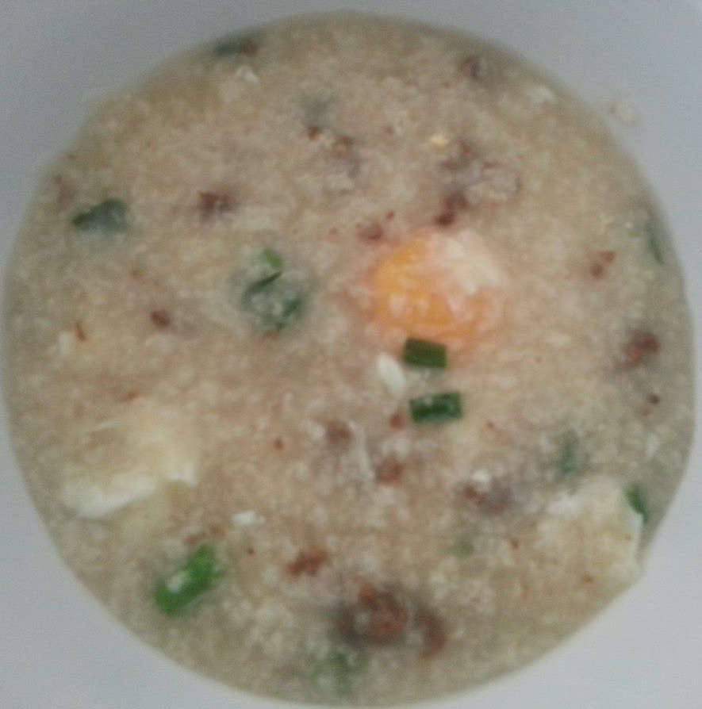

香菇生滚牛肉窝蛋粥做法
2013-08-31 16:58
|
Source
Tags :
cuisine
porrige
zh
菜谱
香菇先用冷水冲洗,然后25度温水浸泡至少1小时,浸泡后的水也要放到粥里
小火1到1.5小时后粥基本烂了,不断搅拌粥
牛肉最后开大火加入过一下,可能是为了避免把牛肉烧老
蛋是用粥捂熟的,据说很经典的技巧,就是要蛋白和粥混在一起,但是蛋黄半熟还是完整的
如果粥觉得不够味可以加盐和鲜露(家乐牌鲜露)

Previous post
Next post
Please enable JavaScript to view the
comments powered by Disqus.
Comments powered by
Disqus